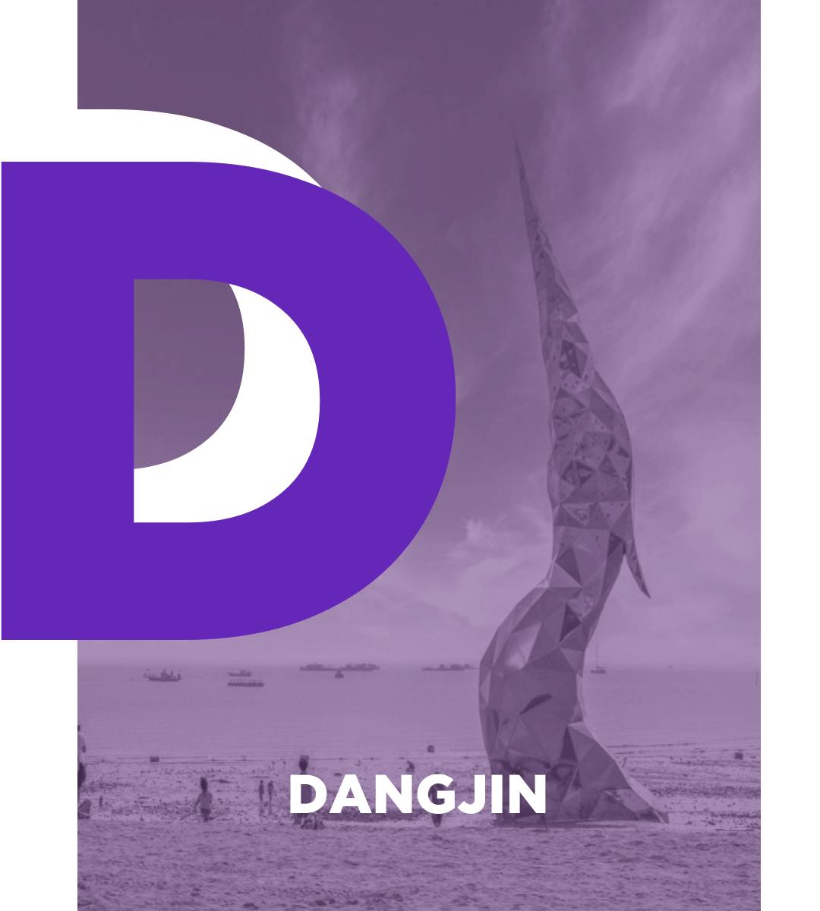

당진
D
S
SU

철강·금속소재 산업 플랫폼 도시
수소도시 지정 등 수소클러스터 선도 도시
강점 : 철강산업(주력) 중심 공업도시
약점 : 1차 산업 중심 산업구조, 정주여건 미흡
기회 : 수소도시 선정
위협 : 주력산업 국제경쟁력 저하+성장세 둔화
도시구조
| 당진시 | 연도 | 한국인 | 외국인 | 다문화 | 65세 이상 | 청년 | 고령화율 (%) | 청년화율 (%) |
|---|---|---|---|---|---|---|---|---|
| 2018 | 167,770 | 5,774 | 4,022 | 28,986 | 51,340 | 17.3 | 30.6 | |
| 2019 | 167,042 | 5,901 | 5,152 | 29,933 | 49,760 | 17.9 | 29.7 | |
| 2020 | 166,249 | 5,450 | 5,344 | 31,331 | 47,216 | 18.8 | 28.4 |
인구성장 전체인구는 증가세, 정주환경·교육·문화여가 여건의 미흡으로 청년유출
지리·산업 : 충남북부권 산업벨트의 핵신 산업도시, 대중국-경기도 해상·육상 물류의 관문
인구·위기 : 인구성장 둔화와 지역소멸 진행중, 산업전환 혁신+주거여건 개선 요구 증대